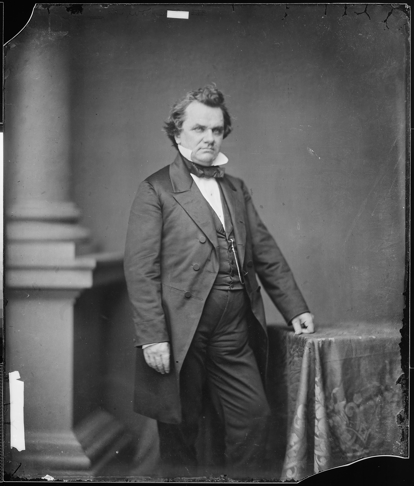
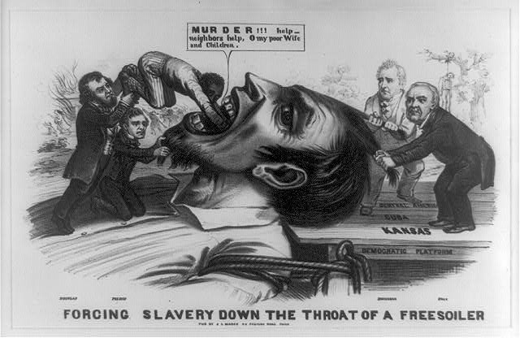
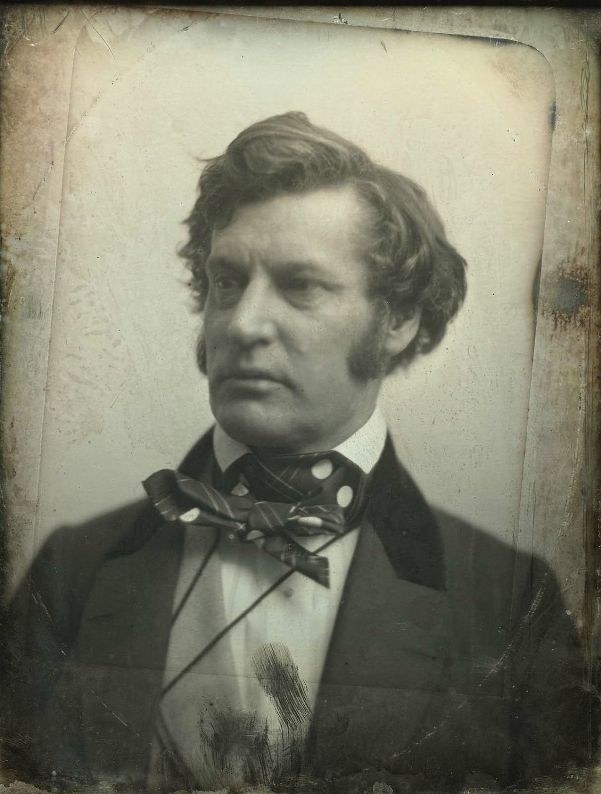

Directions: Your group has the Kansas file. Each station holds one record from the years 1854 to 1857. For every record, state what popular sovereignty was supposed to do and what it did in the record instead. Work through the five stations in order, then deliver the closing verdict in Part 2.
Source: U.S. Congress, Kansas-Nebraska Act, section 14, 1854 (Avalon Project, Yale Law School). Audited TPSP bank record, kansas-nebraska-act-1854. Cuts are marked with ellipses.
[...] That the Constitution, and all Laws of the United States which are not locally inapplicable, shall have the same force and effect within the said Territory of Nebraska as elsewhere within the United States, except the eighth section of the act preparatory to the admission of Missouri into the Union approved March sixth, eighteen hundred and twenty, which, being inconsistent with the principle of non-intervention by Congress with slaves in the States and Territories, as recognized by the legislation of eighteen hundred and fifty, commonly called the Compromise Measures, is hereby declared inoperative and void; it being the true intent and meaning of this act not to legislate slavery into any Territory or State, nor to exclude it therefrom, but to leave the people thereof perfectly free to form and regulate their domestic institutions in their own way, subject only to the Constitution of the United States: Provided, That nothing herein contained shall be construed to revive or put in force any law or regulation which may have existed prior to the act of the sixth of March, eighteen hundred and twenty, either protecting, establishing, prohibiting, or abolishing slavery.

What was popular sovereignty supposed to do, and what did it do in this record: ____________________________
The act declares one part of the Missouri act of 1820 inoperative and void. State which section it names, and state the reason the act itself gives for voiding it.
State the act's own statement of its intent in its own words. What does it say it will not do in either direction, and what does it leave the people of a territory perfectly free to do?
Source: S. P. Chase, Charles Sumner, J. R. Giddings, Edward Wade, Gerrit Smith, and Alexander De Witt, Appeal of the Independent Democrats in Congress to the People of the United States, Washington, January 19, 1854 (pamphlet text, as transcribed by the Independence Hall Association at ushistory.org; spelling as transcribed). Cuts are marked with ellipses.
As Senators and Representatives in the Congress of the United States it is our duty to warn our constituents, whenever imminent danger menaces the freedom of our institutions or the permanency of the Union. Such danger, as we firmly believe, now impends, and we earnestly solicit your prompt attention to it. [...]
We arraign this bill as a gross violation of a sacred pledge; as a criminal betrayal of precious rights; as part and parcel of an atrocious plot to exclude from a vast unoccupied region immigrants from the Old World and free laborers from our own States, and convert it into a dreary region of despotism, inhabited by masters and slaves.
Nothing is more certain than that this prohibition has been regarded and accepted by the whole country as a solemn compact against the extension of slavery into any part of the territory acquired from France lying north of 36° 30' [...] the whole remainder of the Territory to freedom and free institutions forever. For more than thirty years [...] this compact has been universally regarded and acted upon as inviolable American law. [...]
Whatever apologies may be offered for the toleration of slavery in the States, none can be offered for its extension into Territories where it does not exist, and where that extension involves the repeal of ancient law and the violation of solemn compact. Let all protest, earnestly and emphatically, by correspondence, through the press, by memorials, by resolutions of public meetings and legislative bodies, and in whatever other mode may seem expedient, against this enormous crime.
What was popular sovereignty supposed to do, and what did it do in this record: ____________________________
State the three charges the Appeal lays against the bill in its arraignment sentence, in its own words, and state what future it says the bill intends for the region.
The signers call the Missouri prohibition a solemn compact and inviolable American law. State how long they say it has been regarded that way, and state what actions they call on the people to take against the bill.
Source: John L. Magee, "Forcing Slavery Down the Throat of a Freesoiler," Philadelphia, 1856 (Library of Congress). Audited TPSP bank record, forcing-slavery-cartoon-1856. The bank record describes the image in the text below; the cartoon is read here as a campaign argument, not as a report of an event.

A political cartoon published in Philadelphia in 1856 attacking the Democratic Party over Kansas. A bound "freesoiler" is tied to the "Democratic Platform" restrained by tiny figures of presidential nominee James Buchanan and Senator Lewis Cass, while Senator Stephen A. Douglas and President Franklin Pierce force a Black man into his gaping mouth. His head rests on a platform labeled "Kansas," "Cuba," and "Central America." In the background, a scene of burning and pillage appears on the left, and a dead man hangs from a tree on the right.
What was popular sovereignty supposed to do, and what did it do in this record: ____________________________
Name the four Democratic figures the cartoon shows, state what two of them are doing to the freesoiler, and state what the other two are doing.
The platform under the freesoiler's head is labeled with three places. Name them, and state what larger plan the cartoon is accusing the Democratic Party of carrying out.
Source: Charles Sumner, The Crime Against Kansas, speech in the Senate of the United States, May 19, 1856 (1856 pamphlet edition; full text from the Internet Archive scan, crimeagainstkans00sumn). Cuts are marked with ellipses.
Mr. President: You are now called to redress a great transgression. Seldom in the history of nations has such a question been presented. [...] Far otherwise is it with the eminent question now before you, involving, as it does, liberty in a broad territory, and also involving the peace of the whole country with our good name in history for evermore.
I fearlessly assert that the wrongs of much abused Sicily, thus memorable in history, were small by the side of the wrongs of Kansas, where the very shrines of popular institutions, more sacred than any heathen altar, have been desecrated; where the ballot-box, more precious than any work, in ivory or marble, from the cunning hand of art, has been plundered; and where the cry, "I am an American citizen," has been interposed in vain against outrage of every kind, even upon life itself. [...] It is the rape of a virgin territory, compelling it to the hateful embrace of slavery; and it may be clearly traced to a depraved longing for a new slave State [...] here in our republic, force, aye, sir, FORCE has been openly employed in compelling Kansas to the pollution of slavery, all for the sake of political power.

What was popular sovereignty supposed to do, and what did it do in this record: ____________________________
Sumner compares Kansas to Sicily under the tyrant Verres. State the three wrongs he lists against Kansas, in the order he gives them, ending with the cry he quotes.
State the motive Sumner assigns to the crime. What does he say force has been openly employed to compel Kansas to accept, and for the sake of what?
Source: Teaching summary. This station is a summary built from the public record of the Lecompton convention and referendum, not a quotation from a period document. It is labeled a summary on its face so that students weigh it as a summary and quote the other stations, not this one, in their verdicts.
In the fall of 1857 a convention of proslavery delegates met at Lecompton, the territorial capital, and drafted a constitution that protected slavery in Kansas. Free state voters, who were a majority of the territory's actual settlers by then, had boycotted the election of delegates because they distrusted the registration. The convention did not submit its constitution to a straight vote. It offered the voters two choices: the constitution with slavery, or the constitution without slavery. Under the second choice, slavery already in the territory stayed protected by law, and no further enslaved people could be brought in. There was no choice on the ballot to reject the constitution itself. Free state voters boycotted the December referendum, and the constitution with slavery carried on the votes cast. President James Buchanan endorsed the result and asked Congress to admit Kansas as a slave state under the Lecompton Constitution. Senator Stephen A. Douglas, the author of popular sovereignty, broke with Buchanan and fought the admission in the Senate, arguing that a vote arranged so the people could not reject the constitution was not the people deciding. Congress refused to admit Kansas under Lecompton. In a later vote held under Congress's terms in August 1858, Kansas voters rejected the Lecompton Constitution outright. Kansas entered the Union as a free state on January 29, 1861.
What was popular sovereignty supposed to do, and what did it do in this record: ____________________________
State the two choices the Lecompton referendum offered, and state what stayed protected under both of them. Then state the one choice the ballot did not offer.
Douglas broke with his own president over this record. State his objection in the summary's terms, and state what it cost the doctrine that its own author made that objection.
Answer the lesson question from the file as a whole. Was Bleeding Kansas popular sovereignty failing, or popular sovereignty working exactly as its design allowed? Your verdict must use at least three stations, must state the strongest version of the side you reject before you reject it, and must end by naming the one feature of the act's design, or the one event in Kansas, that you judge did the decisive work.
Station 1. The act voids the eighth section of the Missouri act of March 6, 1820, as inconsistent with the principle of non-intervention by Congress with slavery in the states and territories, as recognized by the Compromise Measures of 1850. Its stated intent is not to legislate slavery into any territory or state, nor to exclude it therefrom, but to leave the people thereof perfectly free to form and regulate their domestic institutions in their own way, subject only to the Constitution.
Station 2. The arraignment charges a gross violation of a sacred pledge, a criminal betrayal of precious rights, and part and parcel of an atrocious plot. The plot as charged would exclude immigrants and free laborers from a vast region and convert it into a dreary region of despotism inhabited by masters and slaves. The signers say the prohibition north of 36 degrees 30 minutes has been regarded for more than thirty years as a solemn compact and inviolable American law, and they call for protest by correspondence, through the press, by memorials, and by resolutions of public meetings and legislative bodies.
Station 3. The figures are Buchanan, Cass, Douglas, and Pierce. Douglas and Pierce force a Black man into the bound freesoiler's mouth while Buchanan and Cass hold him down on the Democratic Platform. The platform is labeled Kansas, Cuba, and Central America, so the cartoon accuses the party of a program to force slavery not only on Kansas but on territories it hoped to acquire to the south. Credit students who note the burning and pillage in the background as the cartoon's claim about what the policy had already produced in Kansas, and who treat that background as argument, not evidence.
Station 4. Sumner's three wrongs are the shrines of popular institutions desecrated, the ballot box plundered, and the cry "I am an American citizen" interposed in vain against outrage of every kind, even upon life itself. His assigned motive is a longing for a new slave state and the political power it would add; force, he says, has been openly employed in compelling Kansas to the pollution of slavery, all for the sake of political power. Students should note that this is an accusation by an interested party, delivered two days before the sack of Lawrence, and that its ballot box charge is the one the March 1855 election record at Station 5 and in the reading can test.
Station 5. The ballot offered the constitution with slavery or the constitution without slavery, and slavery already in the territory stayed protected under both. The ballot offered no way to reject the constitution itself. Douglas's objection was that a vote arranged so the people could not reject the constitution was not the people deciding. It cost the doctrine its innocence: popular sovereignty's own author had to argue that its Kansas application was a fraud, which conceded either that the doctrine needed rules it did not have, or that its name could cover a rigged vote.
Closing verdict. Full credit verdicts state the rejected side at its strongest first. For failing: the doctrine promised a territory's own people deciding, and at every test the deciders were outsiders, a Missouri electorate in 1855 and a convention's rigged ballot in 1857, with violence where a fair vote should have been. For working as designed: the act named no residency rule, no timetable, no umpire, so border voting, armed settlement, and a protected minimum for slavery were moves its design left open rather than abuses of it. Credit either verdict defended from three stations, with Station 5 weighed as a summary and the quotation work carried by Stations 1, 2, and 4. The strongest verdicts notice that both readings end at the same place: a doctrine that could not tell a fair vote from a rigged one had no settlement to offer Kansas.